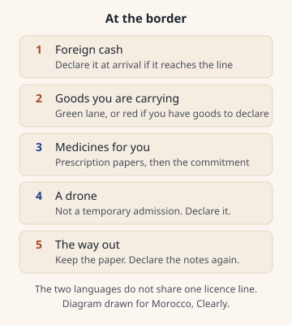

What can I bring in or take out?
Foreign cash has a declaration line, personal medicines need papers, and a drone is not a temporary import. The dirham-note cap is still unconfirmed.
You are reading the right leaflets if your stay is no more than 6 months in a period of 12 months Source-checked 27 Oct 2026 Sources.
Foreign banknotes are free to bring in Source-checked 27 Oct 2026 Sources. Declare them at the arrival control once they reach 100,000 MAD or more Source-checked 27 Oct 2026 Sources, and keep the paper for one stay and no more than 6 months Source-checked 27 Oct 2026 Sources.
On the way out, show where 100,000 MAD or more Source-checked 27 Oct 2026 Sources came from. You still declare amounts under 100,000 MAD Source-checked 27 Oct 2026 Sources.
Dirham notes you bring in or take out are still no more than 2,000 MAD Unconfirmed Sources. The page for that line did not open.
With no goods declaration: things you are already using, perfume 150 ml Source-checked 27 Oct 2026 Sources, toilet water 250 ml Source-checked 27 Oct 2026 Sources, wine 1 litre Source-checked 27 Oct 2026 Sources, spirits 1 litre Source-checked 27 Oct 2026 Sources, tobacco 200 grams Source-checked 27 Oct 2026 Sources, and other non-commercial objects up to 2,000 MAD Source-checked 27 Oct 2026 Sources.
Medicines for you do not need prior authorisation from the health ministry Source-checked 27 Oct 2026 Sources. Bring the prescription and sign the commitment. A drone is not a temporary admission Source-checked 27 Oct 2026 Sources. Declare it. The two languages do not match on the licence Sources disagree Sources.
Last updated 27 Oct 2026.
Written by Omar Oujoud in Casablanca. Research drafting is AI-assisted; observations are recorded in person. How we check
Jump to what’s still being checked · sources
How we checked
The visitor leaflets titled for 2026 were opened in French and in English. Both were read as files, not as a search snippet. The file stamps say 6 May 2026 Source-checked 27 Oct 2026 Sources. Office des Changes did not open: a direct request and a browser each returned a rejection page, the same block the visa guide met. The dirham-note line and the older declaration line stay the records already on Do I need a visa? and on Cash and ATMs at Marrakech airport. Those records were not rewritten here.
Both leaflets put the foreign-cash declaration at 100,000 MAD or more Source-checked 27 Oct 2026 Sources, call it one stay, and name 6 months Source-checked 27 Oct 2026 Sources. The English sentence around that period is clumsy. The French says the period does not go past the figure above. The figures match, so this page uses them. The English file also uses an odd phrase where the French says foreign-currency notes. The amount is the same.
A French procedure page agrees on 100,000 MAD Source-checked 27 Oct 2026 Sources, on a signed paper, and on no fee Source-checked 27 Oct 2026 Sources. It gives residents 1 month Source-checked 27 Oct 2026 Sources, which the leaflets do not repeat. It points at the Office des Changes instruction and does not quote that instruction. The instruction file did not open.
The English switch on the visitor hub returned the French page, so the stay definition was read in French only. The two leaflet languages agree on the duty-free amounts, the medicine line, and the ban on temporary admission for a drone. They do not agree on when a drone needs an import licence. A goods list and an import form were read in French. No English copies of those two files were found.
A customs extract whose file stamp is 2013 Source-checked 27 Oct 2026 Sources still prints 1,000 MAD Source-checked 27 Oct 2026 Sources for dirham notes. These leaflets do not. That extract is not the figure in the short answer. An older visitor file is still online and describes a different drone path. It is not used here. Pets, plants, hunting guns, cars and boats are on the leaflets and are not this question. Nothing on this page was seen at a border.

At a glance
The 2026 leaflets are for a foreign visitor. Foreign cash is a declaration, not a ceiling. Dirham notes are a different line, and that line did not open. A drone is the item the two languages do not share.
| Detail | On the way in | On the way out |
|---|---|---|
| Who the leaflets are for | no more than 6 months in a period of 12 months Source-checked 27 Oct 2026 Sources | The same stay |
| Foreign cash | free to bring in Source-checked 27 Oct 2026 Sources; declare at 100,000 MAD or more Source-checked 27 Oct 2026 Sources | Justify origin at 100,000 MAD or more Source-checked 27 Oct 2026 Sources; still declare amounts under 100,000 MAD Source-checked 27 Oct 2026 Sources |
| How long the cash paper lasts | one stay and no more than 6 months Source-checked 27 Oct 2026 Sources | Show it if you are at the line above |
| Dirham notes | no more than 2,000 MAD Unconfirmed Sources The leaflets do not state a cap. | The same unconfirmed line |
| Goods with no declaration | Perfume 150 ml Source-checked 27 Oct 2026 Sources, toilet water 250 ml Source-checked 27 Oct 2026 Sources, wine 1 litre Source-checked 27 Oct 2026 Sources, spirits 1 litre Source-checked 27 Oct 2026 Sources, tobacco 200 grams Source-checked 27 Oct 2026 Sources, other objects 2,000 MAD Source-checked 27 Oct 2026 Sources | Not yet confirmed |
| Medicines | prior authorisation from the health ministry Source-checked 27 Oct 2026 Sources is not required | take the unused part home Source-checked 27 Oct 2026 Sources |
| Drone | not a temporary admission Source-checked 27 Oct 2026 Sources; declare it | does not match on the licence Sources disagree Sources |
Step by step
- Read the visa result first if you have not already. That page is Do I need a visa?. These leaflets are for a stay of no more than 6 months in a period of 12 months Source-checked 27 Oct 2026 Sources.
- At a land border, a port or an airport, use the green lane if you have nothing to declare, and the red lane if you have goods to declare Source-checked 27 Oct 2026 Sources.
- If the foreign notes reach 100,000 MAD or more Source-checked 27 Oct 2026 Sources, declare them while you are still at the arrival control. You show identity papers and the notes. You should leave with a signed and stamped paper Source-checked 27 Oct 2026 Sources. There is no fee Source-checked 27 Oct 2026 Sources. A declaration filed after you have walked away is not accepted.
- Under that line, the arrival declaration is optional. Make it if you want the paper for the journey home. The same line covers travellers cheques and similar papers that name no payee.
- Dirham notes stay no more than 2,000 MAD Unconfirmed Sources, and that page did not open. Do not treat the old extract named below as the figure to pack.
- For medicines you will take yourself, carry a prescription and a medical certificate, then sign the commitment. The French leaflet says the form is at the customs office. The English leaflet does not say where you get it.
- Do not put a drone in the bag as a temporary import. Declare the machine at the entry office. Read the licence disagreement before you travel with one.
- On the way out, declare the foreign notes again. At 100,000 MAD or more Source-checked 27 Oct 2026 Sources, also show where they came from: the arrival paper, an exchange slip, or a bank debit note. Changing notes after you land in Marrakech is Cash and ATMs at Marrakech airport. The other city's airport is Casablanca airport.
Our advice: get most of your dirhams after you arrive, and spend them before you leave. The note cap is still an open line, and these leaflets do not print one.
Phrases, if you need them:
- Je voudrais déclarer des devises, s'il vous plaît. I would like to declare foreign currency, please.
- أود التصريح بالعملات الأجنبية، من فضلك. I would like to declare foreign currency, please.
The edge case
You live in Morocco, or you are resident there. The procedure page limits the cash paper to 1 month Source-checked 27 Oct 2026 Sources for a resident, not the visitor's 6 months Source-checked 27 Oct 2026 Sources. Do not use the visitor line for a resident's paper.
Your stay will run past 6 months in a period of 12 months Source-checked 27 Oct 2026 Sources. These leaflets do not say they still apply. The hub page also leaves out people who live along the border, and crew.
You land at night. These leaflets do not print a clock for the desk. If you land at Marrakech, the passport-control mark is on the cash guide. That mark is not a customs-hours rule, and it is not a clock for every border.
You bought something to take home and you want the tax taken off. The purchase has to be a tourist retail sale, the same day, from the same seller, of at least 2,000 MAD including VAT Source-checked 27 Oct 2026 Sources. You show the goods and the papers when you leave, and you take the goods out yourself before the end of the third month Source-checked 27 Oct 2026 Sources. The leaflets name two companies that pay the refund. The names are not repeated here. Food, tobacco, medicines, unset stones, weapons, private transport and cultural goods are outside that refund.
Ramadan is not mentioned on these pages.
Our advice: if the counter at the airport is shut, the declaration paper is still the document these leaflets talk about. It is not a promise that a counter will buy your notes. Read the cash guide before you leave the hall.
What to watch for
Three lines use the same digits. 2,000 MAD Source-checked 27 Oct 2026 Sources is the ceiling for extra non-commercial objects you bring in. 2,000 MAD including VAT Source-checked 27 Oct 2026 Sources is the smallest purchase the tax-refund line talks about. 2,000 MAD Unconfirmed Sources is the unconfirmed dirham-note line. They are not one rule.
The green lane is for nothing to declare. A drone is something to declare. Temporary admission is not open to a private person Source-checked 27 Oct 2026 Sources. If you do not declare the machine, the leaflets say it can be confiscated and a penalty can be charged.
Our advice: do not travel on the friendlier drone sentence. The French leaflet ties the licence to bringing the machine in for use. The English leaflet ties it to imports for sale. The two languages do not match Sources disagree Sources. A 2022 list Source-checked 27 Oct 2026 Sources places these machines among goods that need an import licence, and it does not say the licence is only for sale. That list does not close the gap.
The import form asks a private person for a national identity card number Source-checked 27 Oct 2026 Sources. It does not name a visiting passport, and it asks where the machine would fly. That question is not permission to fly.
The duty-free amounts are for things you carry yourself, already in use. The spirits bottle may be another alcohol of that same size. The English leaflet calls the 250 ml bottle cologne. The French calls it toilet water. Same line.
Weapons and ammunition of war, narcotics, and objects contrary to public order Source-checked 27 Oct 2026 Sources may not be brought in. Both leaflets say so.
A smaller arrival declaration is optional. That does not cancel the exit line: amounts under 100,000 MAD Source-checked 27 Oct 2026 Sources are still declared on the way out.
Still being checked
Not yet confirmed, so not stated as fact on this page:
- No more than 2,000 MAD Unconfirmed Sources in dirham notes, in or out. Office des Changes returned a rejection page to a direct request and to a browser. These leaflets do not state this cap.
- A customs extract stamped 2013 Source-checked 27 Oct 2026 Sources still prints 1,000 MAD Source-checked 27 Oct 2026 Sources for dirham notes. It is not the figure in the short answer. The same old file also names a foreign-cash declaration at the figure the 2026 leaflets use.
- The drone licence does not match on the licence Sources disagree Sources. French: bringing the machine in for use. English: imports for sale.
- Whether a visitor may fly a drone, and which office would allow the flight. The import form asks for flight sites. That is not a permission to fly.
- The health ministry's own page on a visitor's medicines was not found. The medicine line is what the customs leaflets print.
- The Office des Changes instruction named on the procedure page did not open, so it is not quoted here.
- An older visitor file is still on the customs site and describes a different path for a drone. It is not used on this page.
- Where the commitment form is handed to you if you only have the English leaflet. The French leaflet says the customs office has it.
- Whether a bag that travels without you gets the same duty-free amounts. The leaflets describe things you carry yourself.
- What a counter pays for your notes, and whether it is open. That sits on the Marrakech cash guide. Nothing here was read off a board at a border.
Next on your route.
Each guide covers one step of the journey.
Sources for this page
Every fact on this page shows when it was checked and links here to its source. What the badges mean.
- Who the visitor customs leaflets are for: Douane. Reviewed 27 Oct 2026.
- Foreign cash on arrival, and the two lanes: Douane, Douane, page 2. Reviewed 27 Oct 2026.
- Foreign cash on the way out: Douane, Douane, page 2. Reviewed 27 Oct 2026.
- Dirham banknotes at the border: Office des Changes. Reviewed 30 Sep 2026.
- Duty-free amounts for a visiting traveller: Douane, Douane, page 2. Reviewed 27 Oct 2026.
- Other non-commercial objects: Douane, Douane, page 2. Reviewed 27 Oct 2026.
- Medicines for personal use: Douane, Douane, page 2. Reviewed 27 Oct 2026.
- A drone is not a temporary admission: Douane, Douane, page 2. Reviewed 27 Oct 2026.
- Drone import licence: the two languages do not match: Douane, Douane, page 2. Reviewed 27 Oct 2026.
- The declaration paper: no fee, and one month for a resident: Douane. Reviewed 27 Oct 2026.
- A 2013 customs extract on dirham notes: Douane. Reviewed 27 Oct 2026.
- Tax taken off a purchase you take home: Douane, Douane, page 2. Reviewed 27 Oct 2026.
- Drones on the import-licence list: Mcinet. Reviewed 27 Oct 2026.
- The drone import form asks for an identity card: Mcinet. Reviewed 27 Oct 2026.
- Goods the visitor leaflets say may not be imported: Douane, Douane, page 2. Reviewed 27 Oct 2026.